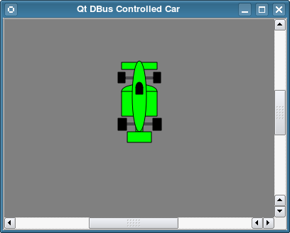

D-Bus Remote Controlled Car Example
Shows how to use Qt D-Bus to control a car from another application.
The Remote Controlled Car example shows how to use Qt D-Bus to control one application from another.

Running the Example
To run the example from Qt Creator, open the Welcome mode and select the example from Examples. For more information, visit Building and Running an Example.
Files:
- remotecontrolledcar/car/car.cpp
- remotecontrolledcar/car/car.h
- remotecontrolledcar/car/car.xml
- remotecontrolledcar/controller/car.xml
- remotecontrolledcar/controller/controller.cpp
- remotecontrolledcar/controller/controller.h
- remotecontrolledcar/controller/controller.ui
- remotecontrolledcar/car/main.cpp
- remotecontrolledcar/remotecontrolledcar.pro
- remotecontrolledcar/car/car.pro
- remotecontrolledcar/controller/controller.pro